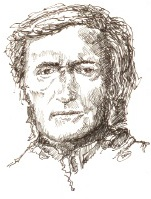

Richard Wagner’ın (1813-1883) operaya yaptığı muazzam katkı, onu on dokuzuncu yüzyılın en etkili adamları listesinin neredeyse tepesinde bir yere koyar. Ama belki daha da önemlisi, Gesamtkunstwerk (Müziği, sanatı, hareketi, tiyatroyu, şiiri ve felsefeyi birleştirdiği tam bir sanat çalışması fikri) kavramıyla somutlaştırdığı, genel anlamda bütün sanata yaptığı katkıdır. Wagner’ı takip eden ve düşüncesiyle güçlü bir biçimde etkilenen düşünürler arasında sanatçılar ve müzisyenlerden (T.S. Eliot, Arnold Schoenberg, Ernest Hemingway ve Pablo Picasso’yu da içine alan) çeşitli kuşaklar vardı.

Acımasızca rekabetçi bir egomanyak olan Wagner, üniversiteye de devam ettiği Leipzig’te doğdu. 1833’te erkek kardeşi ona, erken dönem sinir bozucu kariyerinin birkaç başarısından biri olarak Würzberg’te bir koro şefi olarak bir iş buldu. Würzberg’teyken, ona göre ortalama başarıda sayılabilecek Rienzi (1842) ve Uçan Hollandalı (1843) eserlerini yazdı, ama savurgan yaşadı ve borçluların atıldığı hapishanede biraz zaman bile geçirdi. Wagner, Tannhauser (1844) ve Lohengrin (1848) eserleriyle olgunluğa ulaştığı, Dresden’deki Sakson sarayına taşındı. 1849’da devrimci bir siyasî hareketi destekledi ve sonrasında yakalanması için bir emir çıkarıldı. Wagner, Franz Liszt’in ona af çıkmasına yardımcı olduğu Weimar’a kaçtı.
Sonraki yıllarda Wagner, Tristan ve Isolde (1859), Die Meistersinger (1861) ve Parsifal (1882) operalarıyla birlikte, ünlü Çember Döngüsü’nü besteledi. Wagner, kendisini Alman müziğin ruhunu cisimleştiren kişi olarak gördü. O, bir sosyalistti ve Liszt ile beraber, harmoni, yapı ve bestede devrimci yöntemlere öncülük eden ve Alman müziğinin üstünlüğünü haykıran bir kuram olan, “Geleceğin Müziği” fikrini oluşturdu.
Wagner, ondan önce hiçbir bestecinin yapmadığı gibi dinleyicilere çatışma ilhamı veriyordu. Bazı insanlar devrimci dehasından dolayı müziğini sevdiler ama nahoş karakterinden nefret ettiler. Pek çok çağdaşı ise karakterinin eksik yanlarına ilgisiz kalırken, müziğinin ölçüsünden ve karmaşasından hoşlanmadılar. Wagner, narsisizminin doruk noktasında, Bayreuth’un Baverya kasabasında 1872’de tamamen kendi müziğine adanan bir festival başlattı. Wagner, Venedik’te kalp krizinden öldü.
EK BİLGİLER:
1. Wagner, şiddetli bir Yahudi düşmanıydı. “Müzikteki Yahudilik” adlı eserini 1850’de yayınladı, Yahudi çağdaşlarına, hatta bir zamanlar arkadaşı olan besteci Giacomo Meyerbeer gibi bazı kişilere de saldırdı.
2. Wagner, en iyi arkadaşlarından birinin eşi ve Franz Liszt’in kızı olan Cosima Lizst von Bülow’u baştan çıkardı ve onunla evlendi. Sonrasında Liszt, Wagner ile yıllarca konuşmayı reddetti. Diğer yandan Herr von Bülow, Wagner ile asgari müşterekte, operalarına şeflik yaparak ve büyük bir dahi olan Wagner’ın Cosima’da bir hakkı olduğuna kabul ederek ilişkisini sürdürdü.